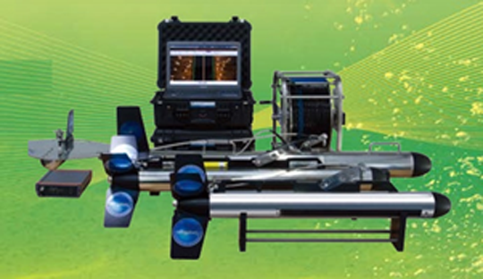

Side Scan Sonar(측면주사음탐기)는 광범위한 수중탐색을 위해 해저면 이미지를 효과적으로 만들 수 있는 소나시스템이며 듀얼주파수를 이용하여 목표물 해저탐색, 구조물 위치파악 및 제품식별에 용이하다.
· 고해상도 이미지 제공
· 광범위 탐색 및 제품 식별을 위한 듀얼 주파수 제공
· 고속 탐색 스피드 지원
· 3자 소프트웨어 지원 및 모자이킹 기능
· 수중 지리 및 수로 탐색
· 수중 물체 조사 및 회수
· 해저 파이프라인 및 연근해 탐색
· 해저 유물 탐색 및 수중 익사체 탐색
· 수중전이체
· 소나 프로세싱 유닛/배터리 박스
· 견인 케이블 / 휠
· GPS 안테나 / 핑어
